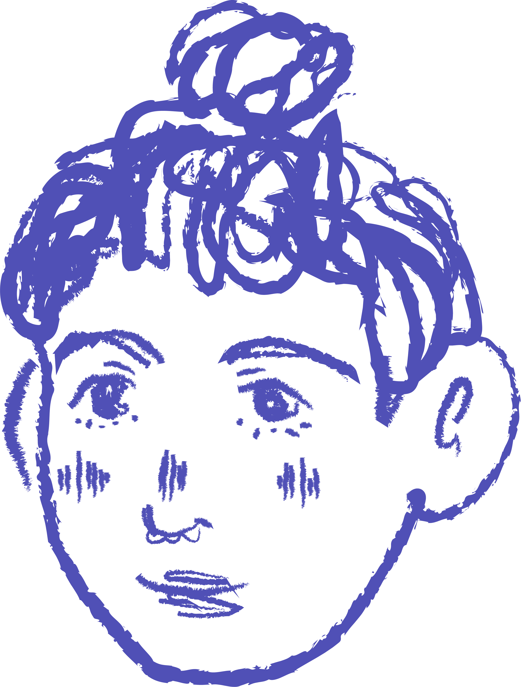

|
SOBRE MÍ
|
|||
|
Soy Cecy, soy de Tamaulipas, México, y actualmente estudio Ciencias Computacionales y Diseño Gráfico. Escucho todo tipo de música, pero la música ranchera se me hace un género muy bonito y representativo del país, además de cargar mucho sentimiento. Otras cosas que disfruto son pasar tiempo con gente querida, los frappés de moccha, y dibujar/pintar. También soy muy activa en mis redes sociales, principalmente Twitter. |

|
||